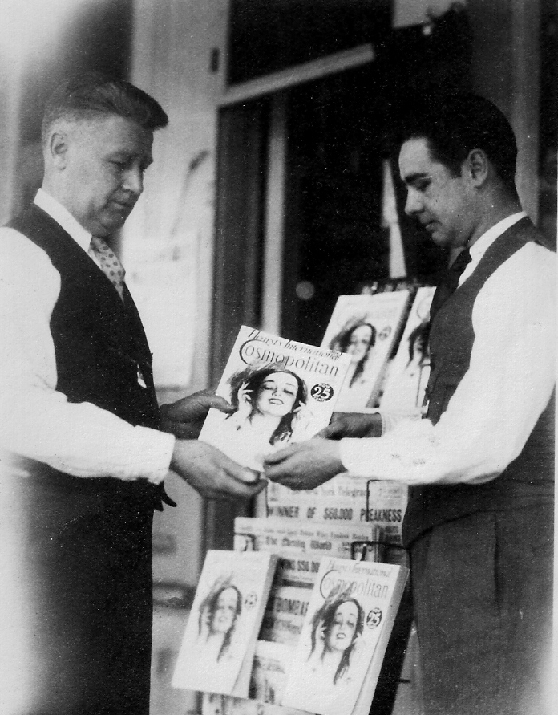
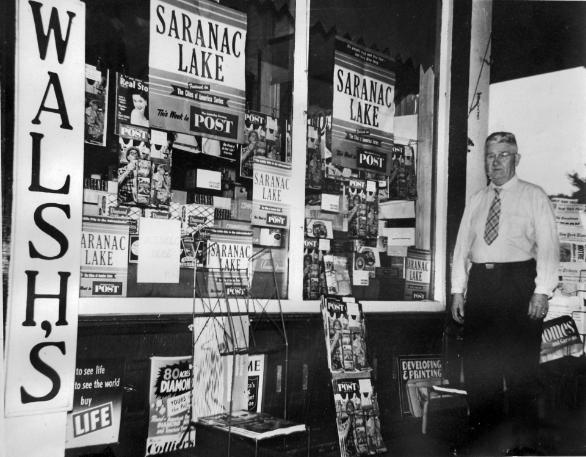
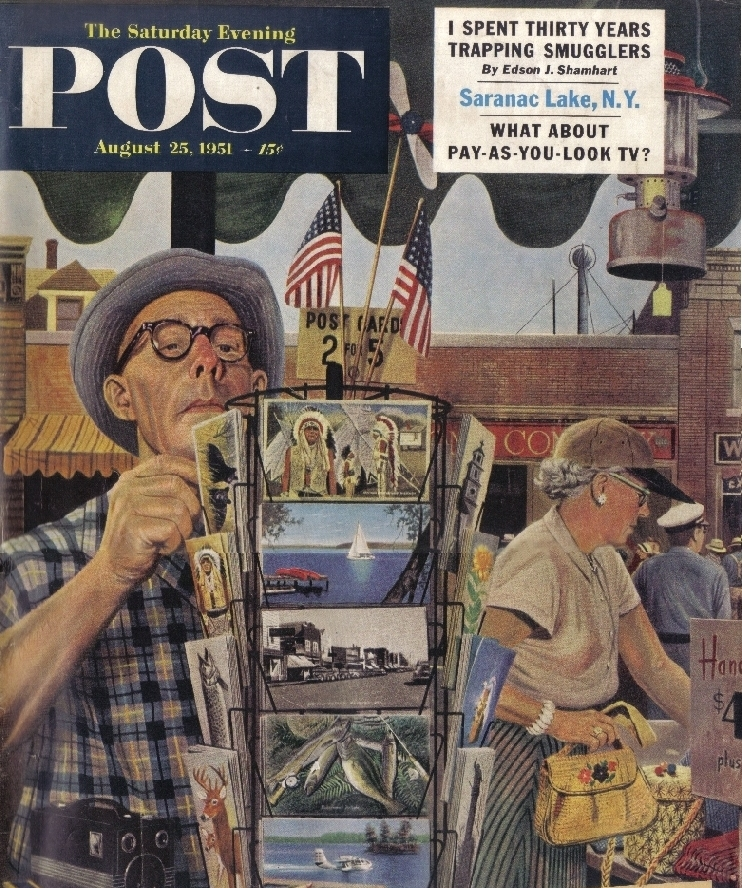
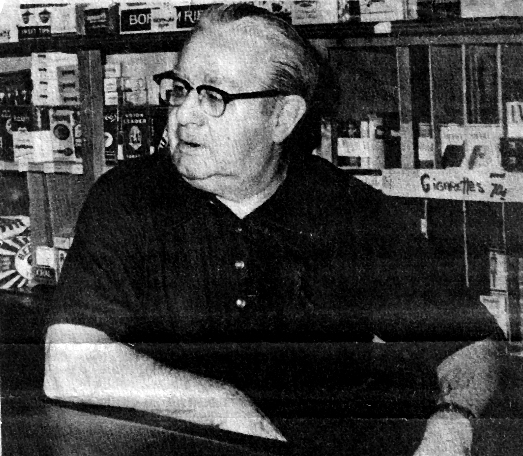

POP WALSH


POP WALSH
John F Walsh was born in 1887 in East Rutland, Vermont and, at the age of 17, moved to Saranac Lake. In 1915, at the age of 28 he opened a cigar shop in what is now Sir Speedy's. After a short stay at that location he moved his shop to the main floor of the Spaulding Block to the right of Lefty's Bar. When his son, Francis, was old enough he joined his father in running the business. Below is a picture of Jack "Pop" Walsh and Francis, who kept the store going until 1977. The picture appears have been taken in the roaring twenties.

This picture of "Pop" below was taken on the week of August 5, 1951. I'm sure of this date because the Saturday Evening Post in the picture features an article on Saranac Lake by Bill White and I have a copy in my collection. Below that picture is a scan of the magazine cover.


Jack and Francis ran the shop in the Spaulding Block until 1955 when Al Shortt, who had owned it since 1942, decided to tear it down and put in a modern Texaco gas station, which would replace the existing small station then located alongside the building. A new store was constructed at 44 Main Street, where Owl's Nest Pizza is now located. Francis, who inherited his father's handle, Pop, ran the popular shop until he retired in 1977. In 1955 the Linwood Cottage was also torn down to make way for the Newberry's parking lot but that's another story.
Below is a picture of Francis Walsh taken on the final week of business at 44 Main Street in 1977. Walsh's Cigar Store had served the village of Saranac Lake for 62 years!
